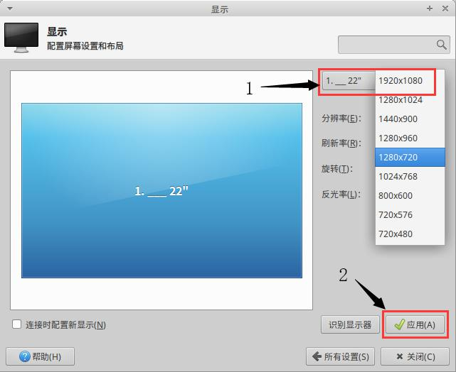
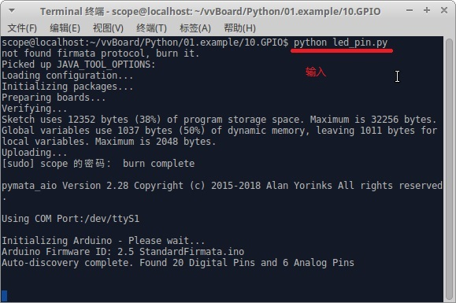
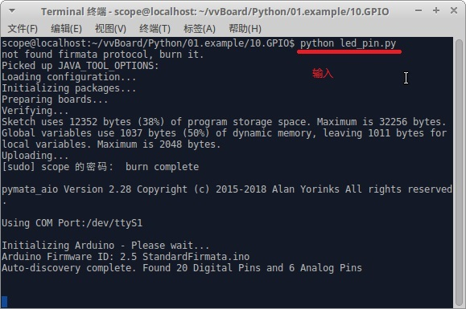
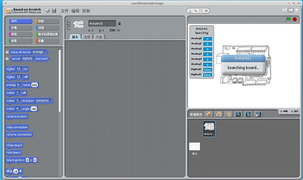

4. 主机模式¶
虚谷号的主机模式也称电脑模式。虚谷号是一台迷你电脑，接上鼠标键盘和显示器，就是一台完整的电脑。
4.1. 应用场景¶
接上显示器和鼠标键盘还有电源后，虚谷号即可变成一台电脑，虚谷号主板相当于电脑主机，系统使用Linux系统。用户名和密码默认为scope。
连接方式如下：

准备工作
虚谷号使用的是Mini HDMI接口，需要准备一个Mini HDMI转标准HDMI的转接线。建议使用绿联之类的大品牌产品。

4.2. 通过电脑模式可以做什么¶
1）编程。通过Linux桌面运行各种软件，编写、调试代码。
- 2）管理。
安装或者卸载软件
安装Python库
管理进程
3）学习。
熟悉linux命令
体验桌面用程序
4.3. 电脑模式的基本操作¶
1）在终端输入uname可以查看vvBoard相关资料。

2）在终端输入ls /dev可以查看插入的串口设备串口

3）修改显示屏的分辨率
（1）点击桌面左下角图标，在打开的界面中单击设置图标，显示界面如下：

（2）点击显示设置，设置对应的分辨率后点击应用完成分辨率设置
4）编写并运行Python代码

 

5）用S4A编程
4.4. Linux快捷键说明¶
Linux的快捷键操作说明：
Ctrl+Alt+t:打开终端
Ctrl+空格键：更改输入法
Ctrl+c:结束终端运行
Alt+PrintScreenSysRq:截屏
Ctrl+w:关闭当前窗口
Ctrl+a:全选
Ctrl+s:保存
Ctrl+c:复制
Ctrl+x:剪切
Ctrl+v:粘贴
注：更多Linux命令，请访问本文档的第三部分。